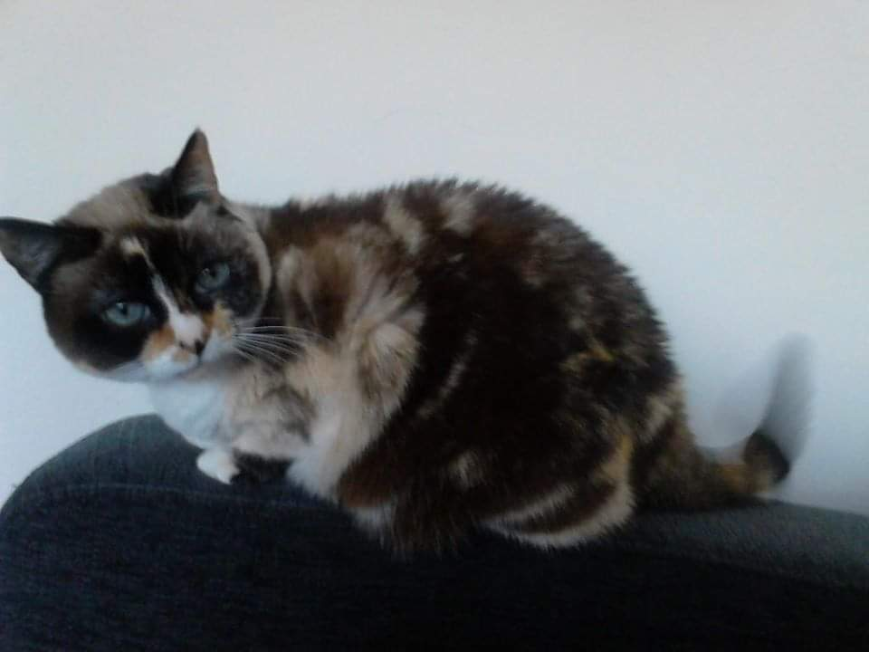
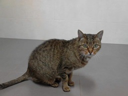
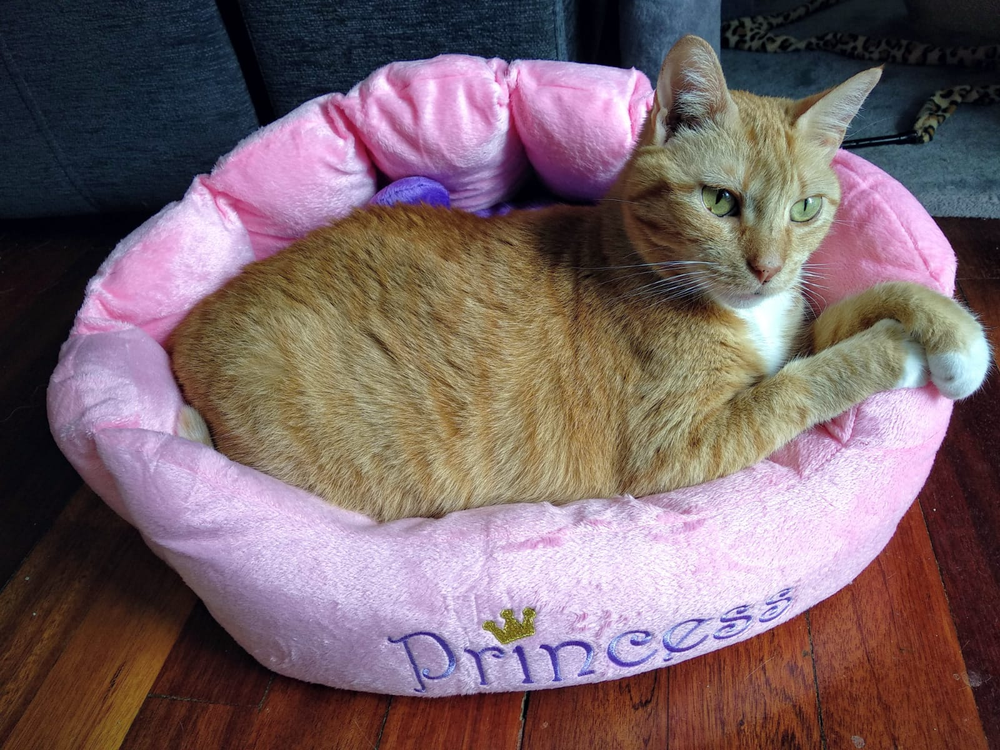
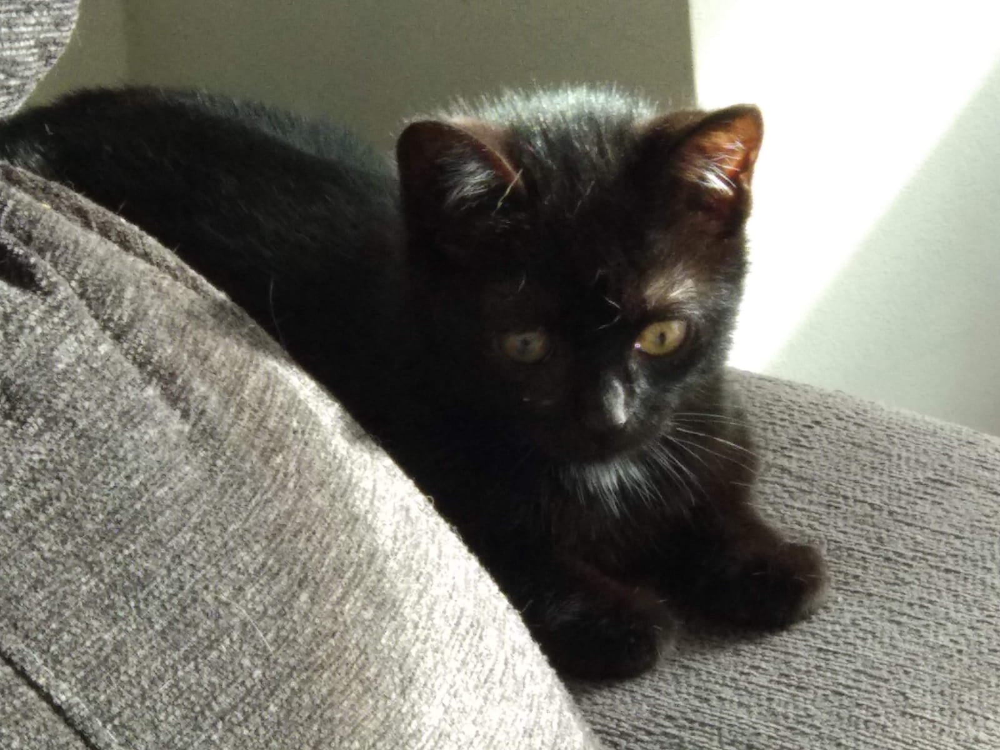
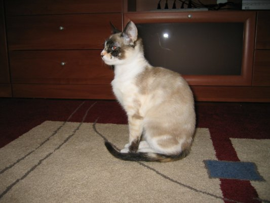
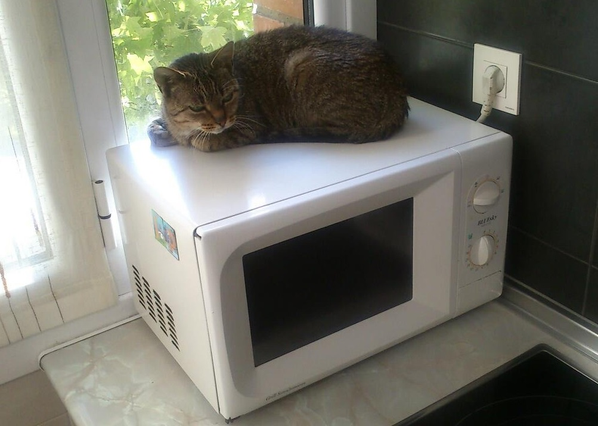
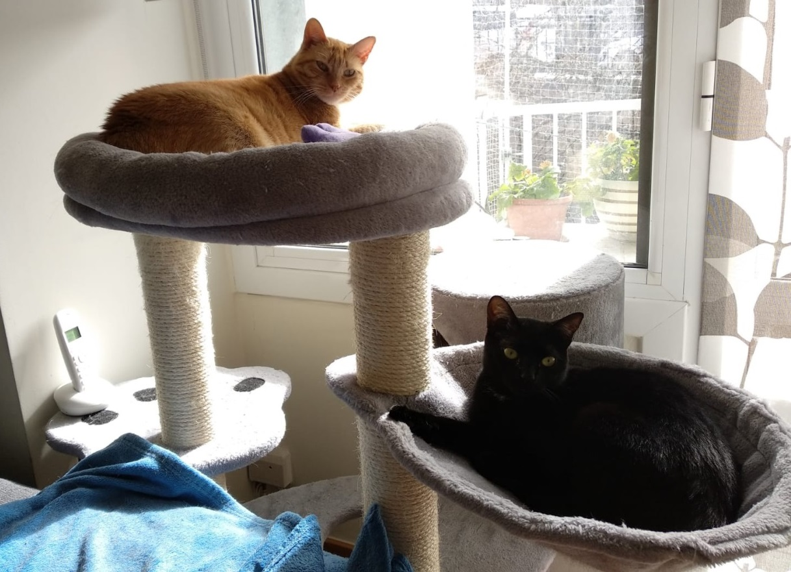
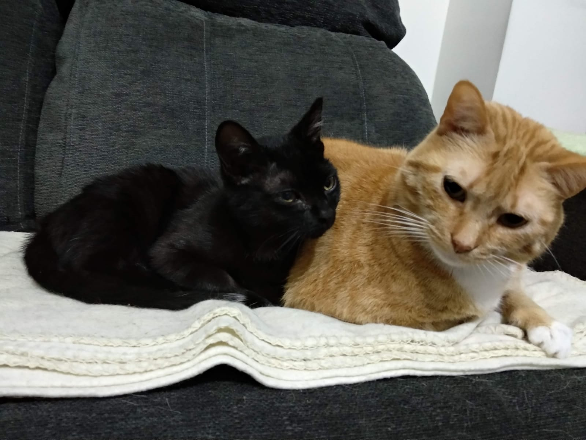

Nuestras gatas
Txispa
Luna
Sinfa
Neftis
Txispa
El día que me fui a vivir con mi novio a Irún, tenía muy claro que, como no me dejaban llevarme a Lagun, quería adoptar a un gato.
Era entre mediados y finales de diciembre cuando quedé en una clínica veterinaria de la zona, donde una mujer de una asociación me llevaría unos gatitos. Se me había antojado tener un gatito siamés, sabiendo que, en realidad, se trataba de un capricho inaceptable; pero, cuando la mujer me enseñó a las tres gatitas que llevaba, había dos atigradas y una... ¡increíble! Era un cruce de siamés. No lo pensé más y fue la elegida. La mujer me contó que la habían encontrado junto con sus hermanitos, sin su mamá, y ella era la última de los hermanos que quedaba por adoptar. Decidí llamarla Txispa.
Como cualquier cachorro, Txispa no paraba quieta y era muy "habladora". Con el tiempo, se hizo adulta, se tranquilizó un poco y se le oscurecieron los colores de su pelaje.
Pasaron los años, la vida da muchas vueltas y ella estuvo conmigo en todas esas etapas; éramos inseparables, vino conmigo de casa en casa, hasta que acabamos viviendo en Egia con el Karen macho y con Luna, con la que no podía estar, pero a la que sí podía sentir y oler a través de la puerta.
Como a cualquier gato doméstico, la llevábamos al veterinario y un día, en un análisis de sangre, salió que tenía una insuficiencia renal. Me preocupé mucho pensando si le quedaría poco tiempo de vida, pero Virginia, la veterinaria, nos dijo que era incipiente y que con medicación se mantendría bien y viviría más años.
Y así fue, Txispa vivió unos cuantos años más, hasta los 16, una esperanza de vida normal para un gato, pero a la que muchos no llegan. Aún la siento a veces junto a mí en el sofá...
 CERRAR
CERRARLuna
La llamábamos "la cojita". Cuando vivíamos en Trintxerpe, la veíamos a menudo con una colonia de gatos en la zona de la Escuela de Música y, a veces, les llevábamos un poco de pienso, pero siempre reservábamos cierta cantidad para ella, seguros de que, por su cojera, lo tendría más difícil para alimentarse. Los demás gatos siempre se asustaban cuando nos acercábamos, pero ella era diferente.
Después de mucho tiempo viéndola en la calle, un noche fría y lluviosa de invierno, el Karen macho la encontró entre coches con no muy buen aspecto y decidió traerla a casa. Resultó que se acostumbró enseguida a estar en un piso y con humanos, se deshacía en mimos con nosotros. Maite de Miauka nos dijo que no era normal, que seguramente se trataba de un abandono o una gata perdida, pero nadie la había reclamado. Así que, como ella nos había adoptado, decidimos llamarla Luna y pensamos que ya era hora de llevarla al veterinario, a ver cómo estaba de salud. Las noticias que recibimos de Carlos, el veterinario, con su análisis en mano, fueron devastadoras. Todo estaba mal, pero llamaba la atención una insuficiencia renal en estado avanzado. Además, tenía inmunodeficiencia felina, así que no podía estar con otros gatos sanos. El veterinario nos dijo que lo mejor, en su estado, era dormirla; pero nosotros veíamos que ella tenía tantas ganas de vivir que, ¿cómo no íbamos a intentarlo? Así que nos empeñamos en sacarla adelante y su estado mejoró mucho. Nunca le vimos un mal gesto de las tantas veces que tuvimos que pincharle suero. A pesar de lo que debía de dolerle, parecía saber que lo hacíamos por ella. Era la viva imagen del agradecimiento.
Por aquel entonces, Txispa era gata única y las cosas no cambiaron mucho para ella en ese sentido. Lo que sí cambió fue que nos mudamos a un piso mejor en Egia y Luna podía estar en un lugar más amplio y más cómodo. Cada vez que entrábamos, nos rogaba que nos sentáramos para que ella pudiera ponerse encima de nuestras piernas. También pasaba largos ratos junto a la ventana; a menudo, al volver a casa, la veíamos mirando hacia la calle y la saludábamos.
Luna vivió tres años con nosotros. Después se fue apagando poco a poco, hasta que nos dijo adiós una víspera de Reyes.
Sinfa
Cuando Luna nos dejó, decidimos darle la oportunidad a otro gato y un tiempo después fuimos a visitar a Miauka, el refugio del que Ametz fue adoptado. Ya conocíamos a Maite y ella nos enseñó a todos los gatos. No recuerdo a ninguno de ellos, solo a una gata naranja, ya adulta, con cara de asustada. En una segunda vez, estuvimos buscando a Mandarina (así se llamaba) y pensamos que ya había sido adoptada, pero solo la habían cambiado de lugar a donde tienen a la mayoría de los gatos. No lo pensé más, era la elegida.
Le pusimos por nombre Sinfa (algo dentro de mí quiso rescatar a la forma en que mi abuelo nos llamaba a mi abuela, a mi prima y a mí). Según nos contaron, vivía en el camping de Oiartzun y, tras unos días en que su alimentadora no la veía, apareció con un fuerte golpe en la cabeza. De ahí que desarrollara síndrome vestibular y la razón por la que su cabecita quedó un poco torcida.
Ya cuando la adoptamos estaba hermosota y aún fue subiendo más de peso. Tuvimos que ponernos muy estrictos con la comida para que no engordara más, pero comía de forma muy ansiosa. Acabó bajando de peso hasta que un día la vimos bastante delgada, además, estaba muy activa y pegaba buenos saltos. No voy a negar que estábamos contentos por ella. Al poco tiempo le tocó su revisión y, como ya era un poco mayor, Carlos nos dijo que le tocaba hacer un análisis de sangre. Resulta que el hecho de que Sinfa estuviera tan activa y hubiera adelgazado tanto no era nada bueno; se debía a que había desarrollado hipertiroidismo. Los valores estaban bastante alterados y tuvimos suerte de que no le hubiera afectado al corazón. Desde entonces está en tratamiento con medicamentos antitiroideos que tiene que tomar dos veces al día, pero, como es tan glotona, se los ponemos con comida húmeda y se los toma sin problemas.
En cuanto a cómo se llevaban ella y Txispa, la verdad es que así así... Txispa ya estaba un poco mayor para escaparse corriendo de Sinfa, que la perseguía, así que la tenía entre ceja y ceja y no soportaba que ella se le acercara. Lo bueno es que Sinfa acabó madurando y al final consiguieron soportarse. Cuando Txispa murió, notamos que Sinfa se sentía sola y, ¿qué fue lo que hicimos?
Neftis
Después de compartir 16 años con Txispa, quedé devastada con su muerte. Necesitaba otro gato que me quitase la pena y Sinfa necesitaba compañía felina. Al cabo de un tiempo, decidimos adoptar otro gato, pero esta vez buscaba un cachorro. En ese momento, en Miauka solo tenían adultos, así que contacté con Katubihotz. Como con Txispa, la historia se repitió, esta vez yo estaba encaprichada con adoptar un gato negro, porque su pelaje se asemeja al terciopelo negro, porque me encantaba el reflejo de la luz en su lomo, porque parecían seres mágicos... Hubiera adoptado otro de cualquier otro color, pero entre las opciones que Ainhoa me dio, había una gatita negra, ¡no tenía elección!

Visitamos dos veces la casa de acogida donde vivía Lili, una panterita preciosa. La habían rescatado del motor de un coche y estaba solita. La segunda vez, ya nos la llevamos a casa adoptada, pero con tratamiento para un ojo, donde había tenido una infección. Era el Karen macho quien normalmente le ponía las gotas y, si le añadimos que se trataba de una gatita asustadiza, eso trajo sus consecuencias, pues empezó a sentir rechazo por él y a esconderse detrás del sofá. A día de hoy, es ahí donde pasa la mayor parte del tiempo y se asusta de todos los humanos, excepto de mí; solo a mí me deja achucharla, solo a mí me hace compañía tumbada en el sofá.
En cuanto a la convivencia con Sinfa, se notaba que había convivido anteriormente con otros gatos, porque se hizo amiga de ella enseguida, aunque a Sinfa le costó un poco más. Era una gozada verlas dormir juntas y cómo nuestra panterita la seguía para conocer los mejores rincones de la casa.
Con respecto a su nombre, me costó unos días decidirme por uno digno de una pantera, no quería ninguno de los típicos Panter, Bagheera o Negri, sino uno que sonara más exótico. Así que me decidí por el nombre de la diosa egipcia de la oscuridad y del inframundo: Neftis. Y todo esto, para que la mayoría de las veces la llame "bichi". Mi bichito...
Asociaciones mencionadas